S12 — हम रोते क्यों हैं?
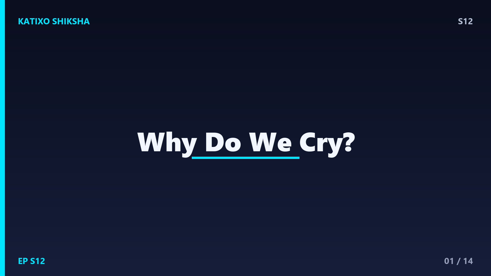
Slide 1दोस्तों, सोचो — प्याज काटते वक्त आँखों से पानी, और कोई दुखभरी मूवी देखते वक्त भी आँखों से पानी। एक ही reaction, पर वजह बिल्कुल अलग! आँसू सिर्फ नमकीन पानी नहीं हैं, ये तुम्हारी आँखों का super protection system हैं। आज Katixo Shiksha पर हम इसी रहस्य को खोलेंगे — कि हम रोते क्यों हैं, आँसू बनते कैसे हैं, और emotional आँसुओं में ऐसा क्या खास होता है जो शायद हमारा stress कम करता है। तो चलो, science की दुनिया में चलते हैं और इस मजेदार सवाल का जवाब ढूंढते हैं!
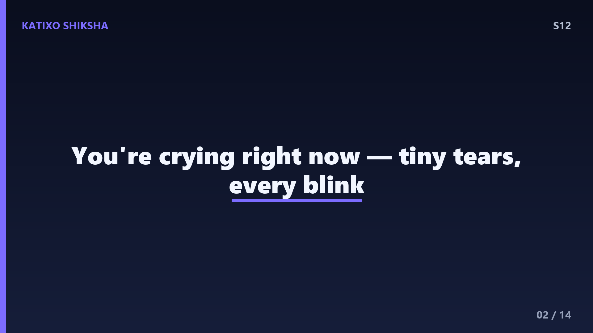
Slide 2सबसे पहले एक चौंकाने वाली बात — तुम हर वक्त रो रहे हो, हाँ सच में! तुम्हारी आँखों के ऊपर, eyebrow के पीछे छुपी होती हैं lacrimal glands, जो लगातार थोड़ा-थोड़ा पानी बनाती रहती हैं। हर बार जब तुम blink करते हो — और एक दिन में करीब 15 से 20 हज़ार बार blink होता है — तब ये आँसू पूरी आँख पर एक पतली परत की तरह फैल जाते हैं। यही परत तुम्हारी आँख को सूखने से बचाती है, साफ रखती है, और धूल के छोटे कणों को बहा देती है। बिना इसके आँख देखना तक मुश्किल हो जाए!
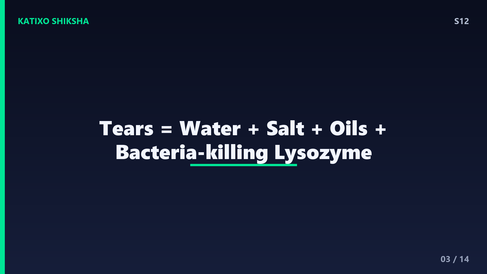
Slide 3अब समझो कि आँसू असल में हैं क्या। ये सिर्फ पानी नहीं — इनमें तीन चीज़ें मिली होती हैं। पहला, water यानी पानी, जो सबसे ज़्यादा होता है। दूसरा, नमक यानी salt, इसलिए आँसू नमकीन लगते हैं। तीसरा, oils यानी तेल, जो आँसू को जल्दी सूखने नहीं देता। और सबसे cool बात — आँसुओं में होते हैं antibodies, खासकर एक enzyme जिसका नाम है lysozyme. ये lysozyme bacteria की cell wall को तोड़कर उन्हें मार देता है। मतलब हर आँसू एक तरह का natural disinfectant है, जो तुम्हारी आँख को infection से बचाता है — बिना किसी दवा के!
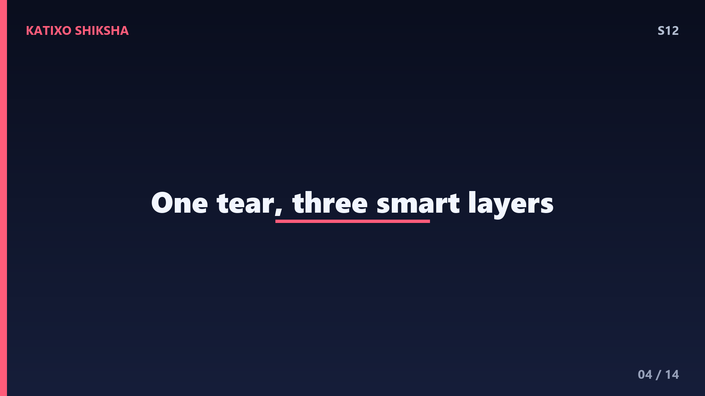
Slide 4अब एक ज़रूरी detail — आँसू सिर्फ पानी की एक परत नहीं, बल्कि तीन layers से बने होते हैं, बिल्कुल एक सैंडविच की तरह। सबसे बाहर होती है oily layer, जो तेल से बनी है और आँसू को evaporate होने से रोकती है। बीच में होती है watery layer, सबसे मोटी, जिसमें पानी, नमक और protective चीज़ें होती हैं। और सबसे अंदर, आँख से चिपकी होती है mucus layer, जो आँसुओं को आँख की सतह पर फैलाकर टिकाए रखती है। ये तीनों मिलकर एक perfect coating बनाती हैं — पतली, मगर बेहद smart engineering वाली!
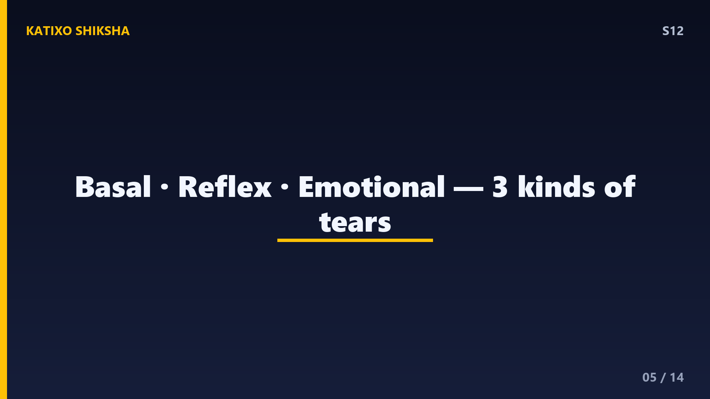
Slide 5अब असली मज़ा शुरू होता है। Scientists ने आँसुओं की तीन अलग-अलग किस्में पहचानी हैं। पहली है basal tears — यही वो लगातार बनने वाले आँसू हैं जो आँख को moist और साफ रखते हैं, हर पल, चुपचाप। दूसरी है reflex tears — जो किसी जलन या irritant पर अचानक निकलते हैं। और तीसरी है emotional tears — जो खुशी, गम या दर्द जैसी भावनाओं पर बहते हैं। तीनों दिखने में पानी जैसे, पर इनकी वजह, इनका chemistry और इन्हें trigger करने वाला system — सब अलग है। चलो एक-एक करके इन्हें समझें!
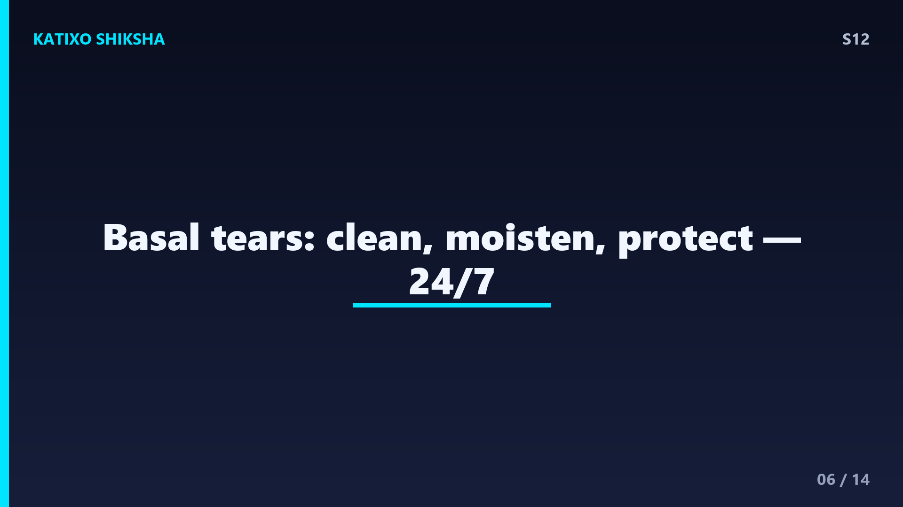
Slide 6सबसे पहले basal tears, यानी हमारे रोज़मर्रा के आँसू। ये वो tears हैं जो तुम्हें पता भी नहीं चलते, फिर भी हर सेकंड काम करते हैं। एक average इंसान पूरे दिन में लगातार थोड़ी मात्रा में ये बनाता रहता है। इनका काम है आँख को सूखने से बचाना, oxygen पहुंचाना — क्योंकि आँख की सतह पर खून की नलियां नहीं होतीं — और धूल-गंदगी को बहाना। जब भी तुम blink करते हो, eyelid एक wiper की तरह इन आँसुओं को पूरी आँख पर फैला देता है, ठीक वैसे जैसे गाड़ी का wiper कांच साफ करता है!
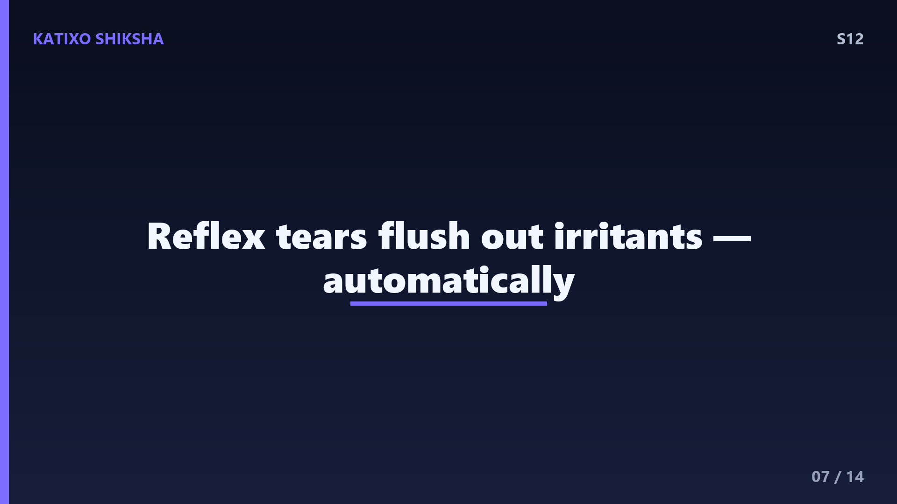
Slide 7अब reflex tears. कभी प्याज काटी है? तुरंत आँखों में पानी आ जाता है! ऐसा इसलिए, क्योंकि प्याज काटते ही एक gas हवा में उड़ती है जो आँख की सतह को irritate करती है। तुम्हारा दिमाग तुरंत खतरा भांपता है और lacrimal glands को आदेश देता है — ज़्यादा आँसू बनाओ, फटाफट! ये reflex tears उस irritant को बहाकर बाहर कर देते हैं। यही reaction धूल, धुआं, तेज़ रोशनी या आँख में कुछ गिरने पर होता है। ये एक automatic defense है — तुम्हें सोचना तक नहीं पड़ता, शरीर खुद आँख की सफाई कर देता है। कमाल है ना!
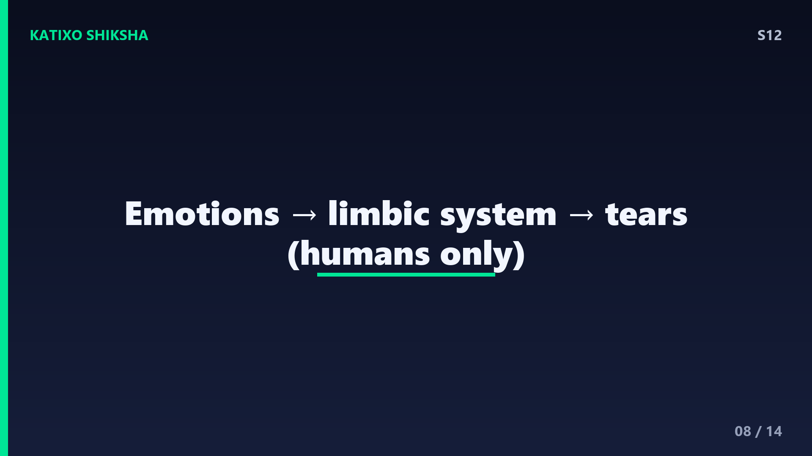
Slide 8अब सबसे दिलचस्प — emotional tears, यानी भावनाओं वाले आँसू। ये तब बहते हैं जब तुम बहुत दुखी, खुश, या emotional हो जाते हो। इन्हें trigger करता है दिमाग का एक खास हिस्सा जिसे कहते हैं limbic system — यही हमारी सारी emotions को control करता है। जब भावनाएं तेज़ होती हैं, तो limbic system parasympathetic nervous system को signal भेजता है, और वही lacrimal glands को आँसू बनाने का आदेश देता है। मज़े की बात — दुनिया में सिर्फ इंसान ही ऐसा जीव माना जाता है जो भावनाओं की वजह से रोता है। बाकी जानवर ऐसा नहीं करते!
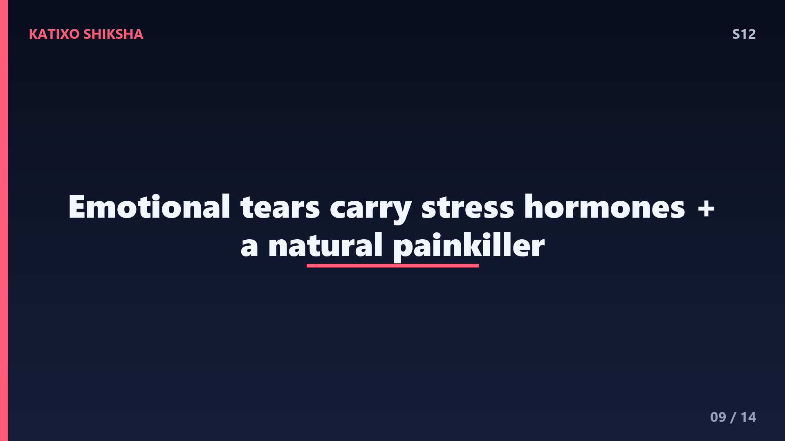
Slide 9अब वो बात जो तुम्हें हैरान कर देगी। Scientists ने जब emotional tears और reflex tears का chemical analysis किया, तो पाया कि emotional tears अलग हैं! इनमें ज़्यादा मात्रा में stress hormones होते हैं, जैसे ACTH. साथ ही इनमें होता है एक natural painkiller — leucine enkephalin. यानी जब तुम रोते हो, तो हो सकता है कि शरीर इन आँसुओं के ज़रिए stress chemicals को बाहर निकाल रहा हो, और साथ में एक soothing painkiller भी release कर रहा हो। इसीलिए कई बार जी भरकर रोने के बाद हल्का और बेहतर महसूस होता है — रोना सच में एक relief हो सकता है!
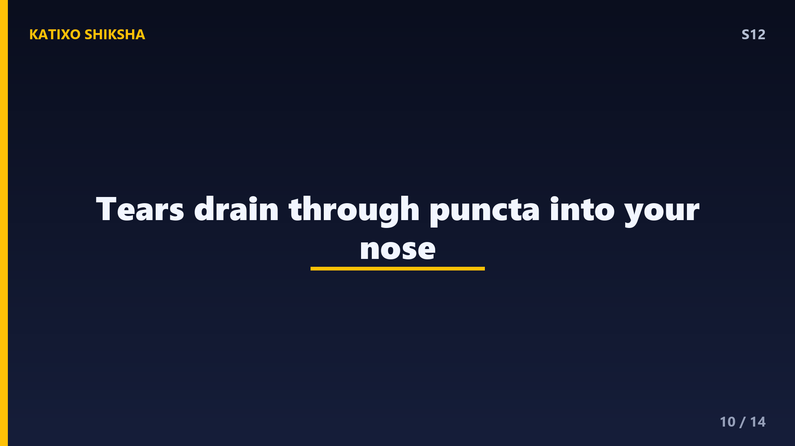
Slide 10अब एक सवाल जो सबके मन में आता है — रोते वक्त नाक क्यों बहने लगती है? इसका जवाब plumbing में छुपा है! lacrimal glands में बने आँसू आँख की सतह पर फैलते हैं, फिर आँख के अंदरूनी कोने में मौजूद दो छोटे-छोटे छेदों से नीचे जाते हैं। इन छेदों को कहते हैं puncta. यहाँ से आँसू tear ducts नाम की नालियों से होकर सीधे नाक में पहुँच जाते हैं। जब तुम बहुत रोते हो, तो आँसू इतने ज़्यादा बन जाते हैं कि नाक में बहने लगते हैं — और बस, नाक बहने लगती है। मतलब तुम्हारी नाक का पानी असल में आँसू ही है!
Slide 11तो एक बार पूरी कहानी जोड़ लें। तुम्हारी आँखों के ऊपर lacrimal glands हर पल basal tears बनाती हैं जो blink से पूरी आँख पर फैलते हैं। प्याज या धूल आने पर reflex tears आँख की सफाई करते हैं। और भावनाएं तेज़ होने पर limbic system और parasympathetic nervous system मिलकर emotional tears बहाते हैं, जिनमें stress hormones और natural painkiller होते हैं। आँसू में पानी, नमक, oils और lysozyme जैसे bacteria मारने वाले antibodies होते हैं। और इस्तेमाल हुए आँसू puncta से tear ducts के ज़रिए नाक में चले जाते हैं। पूरा system एकदम perfectly designed!
Slide 12अब आ गया मज़ेदार हिस्सा — Quick brain check! दोस्तों, यहाँ video को pause करो और तीन सवालों के जवाब खुद सोचो। पहला सवाल — आँखों के ऊपर मौजूद वो glands क्या कहलाती हैं जो आँसू बनाती हैं? दूसरा सवाल — आँसुओं में मौजूद वो कौन सा enzyme है जो bacteria को मारता है? और तीसरा सवाल — emotional tears में मौजूद वो कौन सा natural painkiller होता है जो शायद रोने के बाद हल्का महसूस कराता है? सोचो, याद करो, और जवाब तैयार रखो। अभी video रोको और दिमाग पर ज़ोर डालो — फिर अगली slide पर answers मिलेंगे!
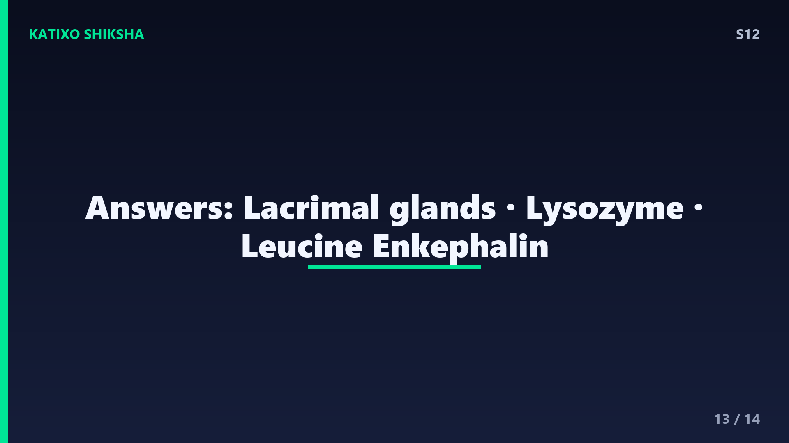
Slide 13तो दोस्तों, चलो answers मिलाते हैं! पहला जवाब — आँसू बनाने वाली glands कहलाती हैं lacrimal glands, जो तुम्हारी आँखों के ठीक ऊपर छुपी होती हैं। दूसरा जवाब — आँसुओं में मौजूद bacteria मारने वाला enzyme है lysozyme, जो एक natural disinfectant की तरह काम करता है। और तीसरा जवाब — emotional tears में मौजूद natural painkiller है leucine enkephalin, जो रोने के बाद relief का एहसास दे सकता है। कितने सही हुए? तीनों सही? शाबाश, तुम तो tear expert बन गए! एक या दो? कोई बात नहीं, अब तो पक्के याद रहेंगे।
Slide 14तो आज हमने सीखा — आँसू तीन तरह के होते हैं: basal, reflex और emotional. इनमें पानी, नमक, oils और bacteria मारने वाला lysozyme होता है। emotional tears में stress hormones और painkiller होते हैं, इसलिए रोना stress कम कर सकता है। और आँसू puncta से होकर नाक तक जाते हैं, तभी रोते वक्त नाक बहती है। अगले episode में हम एक और मज़ेदार सवाल सुलझाएंगे — Why does ice float on water? यानी बर्फ पानी पर तैरती क्यों है? बहुत interesting होने वाला है! अगर मज़ा आया तो like करो, और Subscribe करना मत भूलना! Bye!